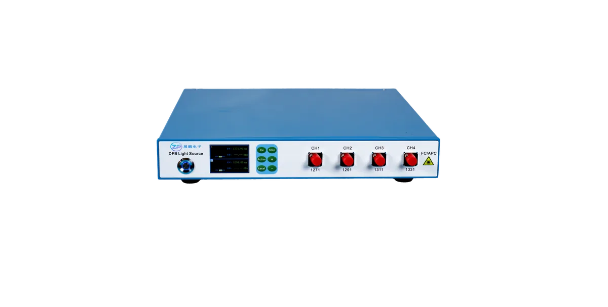

D-OS104F是一款4通道 DFB CWDM 稳定光源设备，内置精密温控和功率反馈电路， 具有高波长精度、高边模抑制比和优异的功率稳定性。每个通道独立可控，支持以太网和串口远程操作， ，是光通信测试、光器件检测和实验室精密测量的理想光源。
| 通道数 | 4 |
|---|---|
| 中心波长 | 1271 / 1291 / 1311 / 1331 nm（CWDM）（典型值） |
| 波长精度 | ≤ 2 nm（典型值） |
| 峰值功率 | ≥ 7 dBm（典型值） |
| 功率动态范围 | ≥ 10 dB |
| 边模抑制比 | ≥ 40 dB（典型值，峰值功率时） |
| 光隔离度 | ≥ 30 dB |
| 温度范围内功率稳定度 | ≤ ±0.1 dB（15~35°C） |
| 恒温功率稳定度 | ≤ ±0.03 dB （15~35°C） |
| 光纤 | SMF（单模） |
| 光接口 | FC/APC |
| 远程控制 | 以太网 + 串口，SCPI 指令集 |
| 电源 | 100 ~ 240V AC, 50/60Hz |
| 外形尺寸 | 300mm x 350mm x 45mm （台式） |
| 重量 | 0.5 kg |
| 工作温度 | 0°C ~ 40°C |
| 存储温度 | -30°C ~ 60°C |
| 相对湿度 | 0% ~ 85% （非结露） |
插入损耗/偏振相关测试
分布式/点式传感光源
光功率计校准/比对
光模块自动化测试